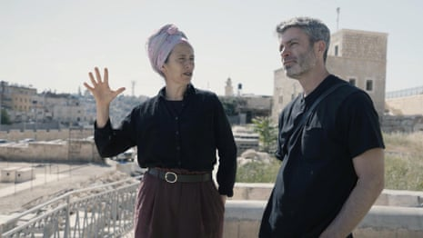

A 20-year-old Palestinian-American was killed by Israeli settlers while visiting relatives in the occupied West Bank , his family have said.
Sayfollah “Saif” Musallet was reportedly beaten by Israeli settlers while he was on his family’s farm in an area near Ramallah. A group then prevented ambulances from reaching Musallet for three hours, according to the family, who said he died of his injuries before reaching hospital.
“I was the first one to reach Saif,” said Mohammed Nael Hijaz, a 22-year-old friend of Musallet. “He was not moving when I got there and he could barely breathe. There was time to save him.”
Another Palestinian man, 23-year-old Razek Hussein al-Shalabi, was fatally shot during the attack and was left to bleed to death, the Palestinian health ministry said. The funeral for both men will be held on Sunday so they can be buried together, according to a cousin of Musallet.
The attacks come amid a wave of increasing Israeli settler violence targeting Palestinians in the West Bank – more than 1,000 Paestinians have been killed and at least 9,000 injured since Hamas militants launched a murderous assault in southern Israel on 7 October 2023.
The Israeli military claimed stones were thrown at Israelis and that “a violent confrontation developed”. It added that it was “aware of reports concerning a Palestinian civilian” and that it was looking into the incident.
A spokesperson for the US Department of State said that it was aware of reports of the death of a US citizen in the West Bank and that it was “ready to provide consular services”, declining to comment further “out of respect for privacy of the family”.
In a statement, the family demanded an investigation by the US state department into the killings and called on it to “hold the Israeli settlers who killed Saif accountable for their crimes”. Witnesses of the confrontation claimed that Israeli soldiers were present during the confrontation.
Three Palestinian-American teenagers have been killed in the West Bank since 7 October. As yet, no one has been punished for the deaths.
Mussalet was born and raised in Florida, and had just opened an ice-cream shop in Tampawith his father. He had traveled to the West Bank to visit relatives at the beginning of June, family said.
“He was a very sweet guy, full of hopes and dreams,” said Hijaz, who mourned the fact that they were unable to save his friend.
In a statement, his family said: “Saif was a brother and a son, just starting the prime of his life. He was a kind and hard-working and deeply respected young man. Saif built a successful business in Tampa and was known for his generosity, ambition and connection to his Palestinian heritage.”
‘God gave us Israel, all of it’ | Along the Green Line: episode 1 – video
Mussalet was attacked on a farm owned by his family in the town of Baten al-Hawa, north of Jerusalem. The area is within Area B, which is under the administrative control of the Palestinian authority but the security control of the Israeli military.
Settlers had attacked two journalists working for DW, a German broadcaster, in the same area a week earlier, prompting condemnations by the German ambassador to Israel. Settlers had attacked them by throwing rocks at them, despite them wearing well-marked press jackets, severely damaging their car. The Israeli military said it would look into the incident.
The Israeli military has been accused by rights groups of standing by or even helping as settlers raid Palestinian villages, where they vandalise property and attack residents. Arrests of settlers are rare.
Two weeks earlier, more than 100 settlers rampaged through the village of Kafr Malek, near Ramallah, killing three men and injuring several more people.
At a funeral for Abraham Azulay, an Israel Defense Forces soldier and settler killed in south Gaza on Wednesday, mourners called for revenge against Palestinians for their friend’s death.
“We want redemption,” a friend said. “We want the temple, we want revenge.”
The Biden administration had placed sanctions on several figures within the settler community in an effort to curtail the violence, but those sanctions were repealed by Donald Trump after becoming the US president.
“The settlers want to take over our land,” said Hijaz. “Their aggression is increasing by the day. The Israeli army comes to protect them and don’t do anything to stop them from attacking us. No one can hold the settlers accountable.”